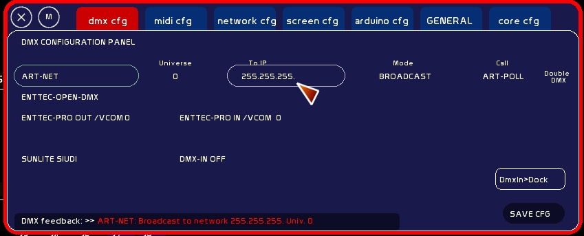
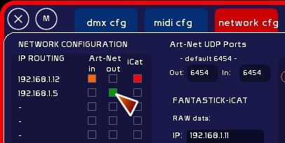
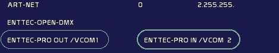
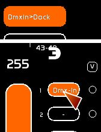

Table des matières
Configuration DMX
Les interfaces DMX suivantes sont portées:
- protocole Art-Net: ( éthernet )
- et autres interfaces “art-net compliant”
- ENTTEC OPEN DMX ( usb)
- ENTTEC PRO ( usb) et ENTTEC PRO MK2 (usb)
La sortie DMX est doublée: vous pouvez émettre le data vers une interface DMX USB et en Art-Net en même temps ( pilotage d'autres logiciels).
En version précédant la 0.8.4, la Velleman et l'interface USBDMX512 de Vinc's sont supportées. Elles ont été retirées pour la première pour sa latence, pour la seconde pour le peu de succès rencontré par cette interface française (hélas).
Installation de l'interface DMX / drivers
Pour communiquer entre White Cat et votre interface DMX, vous devez avoir absolument installé les drivers de votre interface DMX sur votre ordinateur.
Il est préconisé, une fois l'installation de ces drivers faite, de redémarrer votre ordinateur.
Il est possible qu'avec Vista ou Windows 7 vous rencontriez des problèmes lors de l'installation de vos drivers, comme:
- le bloquage des installeurs pour des raisons de sécurité
- le bloquage de l'accès à internet pour la mise à jour du driver
Les indications fournies ici sont donc à titre informatif, et ne prétendent pas régler les problèmes spécifiques de connexion à internet, de mise à jour des drivers, ou de bloquage sécurité de votre système d'exploitation. A vous de dompter le windows…
Enttec ODE
Cette interface est en protocole éthernet. Il n'y a pas d'installation de drivers, à moins que vous rajoutiez une carte réseau à votre ordinateur.
Cette carte est branchée sur un câble en RJ45. Ce câble en RJ45 peut être branché soit directement sur votre ordinateur, soit sur un Hub RJ45, soit sur un routeur Wifi en RJ45.
De façon à communiquer avec elle, il va falloir spécifier un port éthernet à votre ordinateur, qui soit de la même famille que celui de la carte.
Ou alors, paramétrer votre carte DMX via le NMU manager fourni par Enttec, pour lui affecter une adresse IP dans le même champ que votre port éthernet.
Généralement, en protocole Art-Net, on préfera travailler dans les adresses IP de la famille 2.255.255.
Le paramétrage du port physique en éthernet se fait depuis Windows:
- appelez le panneau de configuration de Windows
- clickez [connexions réseau et internet] puis clickez [connexions réseau]
- sélectionnez connexion réseau local puis click droit > propriétés
- sélectionner dans la liste TCP-IP puis clicker propriétés
- choisissez l'onglet configuration alternative
- spécifiez l'adresse alternative: IP: 2.255.255.1 par ex / masque 255.255.255.0 / passerelle defaut 2.255.255.1 / DNS rien
- clicker quitter pour appliquer les modifications
Enttec OPEN
Il faudra pour installer le driver être connecté à internet. L'installateur télécharge les mises à jour.
Il est possible d'éviter cette procédure, en regardant dans le dossier Drivers fourni avec White Cat:
- brancher l'interface Enttec OPEN
- une fenêtre de dialogue pour la recherche du driver s'affiche
- sélectionner “rechercher manuellement un driver” et spécifier comme emplacement: WhiteCat/Drivers/Enttec Open/
- normalement vous êtes amené à faire cette manipulation ( spécifier le driver ) DEUX fois
- redémarrer
Enttec PRO
Si vous avez accès à internet, l'installateur automatique fonctionne très bien.
En installation manuelle , il faut installer le driver VCOM. Si vous ne le trouvez pas sur le site de Enttec, vous pouvez le trouver ici: http://le-chat-noir-numerique.fr/release/dmx_drivers/
Avoir ses drivers sur clé est important en tournée.
Dans le cas d'une installation manuelle:
- lancer Pro_VCOM_Setup.exe
- brancher l'interface Enttec PRO
- une fenêtre de dialogue pour la recherche du driver s'affiche
- sélectionner “rechercher manuellement un driver” et spécifier comme emplacement: C:/VCOM/
- normalement vous êtes amené à faire cette manipulation ( spécifier le driver ) DEUX fois
- redémarrer
Important: Enttec Open et Pro
sur certains ordinateurs, brancher sur un autre port usb que celui utilisé lors de l'installation du driver, demande de répéter cette procédure.
Certains ports usb ne délivrent pas assez de puissance électrique pour alimenter l'interface. On peut pallier à ce problème en passant par un HUB usb. Il faudra éviter de brancher trop d'accessoires divers sur ce hub ( clavier, souris, joystick etc…). Ce problème se détecte à l'installation du driver: la procédure d'installation ne se fait qu' UNE SEULE FOIS au lieu de DEUX.
Si votre interface DMX fonctionne avec l'utilitaire de Enttec, mais pas avec WhiteCat, il faudra réassigner celle-ci à un port COM inférieur à 10. Voir ici.
Enttec PRO MK2
L'Enttec PRO MK2, en restitution d'un seul univers DMX fonctionne comme la Enttec PRO. Ce sont les mêmes drivers. Cependant, il faudra, pour toute installation sur une machine, absolument ACTIVER LE PORT COM VIRTUEL (VCP).
Une fois installé les drivers, il faudra:
- aller dans le panneau de configuration
- ouvrir le gestionnaire de périphériques
- sélectionner l'USB SERIAL PORT dans Universal Serial Bus Controller
- faire un click droit dessus et demander les propriétés
- aller dans l'onglet Avancé
- cocher load VCP
- clicker Ok
Pour l'instant seule la restitution DMX out est portée dans WhiteCat.
D'ici aout 2013, les fonctions DMX IN et le deuxième univers DMX seront accessibles.
SUNLITE SIUDI-8C
Le portage sous WhiteCat est fait sur la base drivers de la Sunlite Suite 2 ( février 2010).
Normalement, ces drivers et dll acceptent la rétro compatibilité sur les interfaces 5C et 6C.
En cas de non fonctionnement 5C et 6C, m'en avertir et voir avec l'équipe Nicolaudie, qui est très réactive.
Menu de configuration DMX

On y accède en clickant [DMX CFG].
Le choix de l'interface se fait en clickant le nom de celle-ci sur la gauche.
En clickant le nom de l'interface, vous éteignez l'interface précédemment sélectionnée et ouvrez la communication avec l'interface de votre choix. Contrairement à schwartzpeter, on peut donc intervenir sur le choix de celle-ci depuis l'intérieur du programme, sans avoir besoin de redémarrer.
Vous avez même le droit de vous tromper d'interface, il n'y aura pas de conséquences.
En haut à droite, vous voyez affiché le taux de rafraichissement en dmx OUT ( 50xseconde) ainsi qu'en dmx IN ( 30xseconde).
En bas de ce menu, en rouge, le retour d'infos sur les opérations avec les interfaces .
En clickant [Save] en bas à droite de la fenêtre de configuration dmx, vous enregistrez l'interface DMX par défaut pour le prochain redémarrage de WhiteCat.
Chaque interface a ses spécificités et donc des actions différentes.
ART-NET
Le signal dmx est envoyé sur le réseau éthernet.

Vous pouvez éditer:
- l'univers dmx vers lequel émettre
- l'univers IP vers lequel émettre (en général 2.255.255.255 ).
- le type d'envoi:
- en broadcast ( sur toutes les machines présentes dans la famille 2.1.1.*, de 0 à 254 )
- en unicast (vers une seule machine, par ex. 2.1.1.3)
En clickant [ART-POLL] vous envoyez sur le réseau une requête pour savoir quelles machines en protocole art-net sont présentes ( logiciels, interfaces dmx en art-net).
Attention ! Vous définissez dans le menu DMX l'adresse vers laquelle émettre. Il vous faut faire attention à quel adaptateur réseau vous êtes branchés: Il faut en effet que les adresses soient dans la même famille.

Voir: Configuration Network
Editer l'univers
- taper le numéro d'univers
- Clicker la case
Editer l'adresse IP
- Taper l'IP
- Clicker la case
DoubleDMX
(0.7.6)
DoubleDmx vous permet de travailler avec une interface USB DMX , et d'envoyer simultanément un signal art-net sur le réseau.
DoubleDmx permet donc de travailler avec des logiciels tiers en protocole art-net, et d'utiliser votre interface dmx usb préférée.

Pour paramétrer Art-Net:
- sélectionner en tant qu'interface le protocole Art-Net ( voir ci dessus)
- si vous désirez envoyer du DMX vers un logiciel sur le même ordinateur, choississez l'IP 127.0.0.1, mettez vous en mode Unicast et désactivez dans [Network CFG] la réception art-net.
Attention: sous Vista et Seven, 127.0.0.1 ne fonctionne pas ( c'est IPv4). Il faut se mettre en adresse …1 ou ..1. ( config IPv6) en mode Broadcast pour accéder au port virtuel Host.
Si vous êtes en réseau fermé, sans autre application que votre machine vous pouvez aussi donner comme adresse 255.255.255.255 et arroser ainsi toutes addresses IP possibles sans vous préoccuper de la définition des adresses.
Pour enclencher/désenclencher l'envoi Art-Net:
- garder son interface Dmx sélectionnée
- clicker DoubleDmx
- clicker [Save CFG] pour sauvegarder ce paramètre
ENTTEC PRO
Vous pouvez avoir 2 enttec PRO branchées à votre ordinateur.
La première interface branchée sous windows est le DMX OUT.
La deuxième interface branchée après est le DMX IN.

Il est donc recommandé de brancher vos interfaces l'une après l'autre, une fois l'ordinateur complètement allumé ( chargement de windows complet et fini), et avec un petit temps entre les deux.
La deuxième détectée recevra le DMX-IN qu'il faudra affecter au dock d'un master.
Vous pouvez aussi travailler avec plusieurs modèles d'interface, la Pro étant utilisée pour l'aquisition d'une console.
0.7.5: important: pour l'instant de la data IN n'est pas très fluide pour du temps réel. Il y a une latence. Il faut que je change tout le mode d'aquisition du data et le dialogue avec les enttec pro, en passant des drivers VCOM aux drivers FTDI. J'ai préféré mettre en ligne la 0.7.5 avant ce grand changement d'approche.
SUNLITE SUIDI 8C et rétros
Cette carte permet de recevoir et d'émettre en même temps du data. Elle est, dans sa catégorie, la plus perfomante et la plus rapide, grâce à son triple buffer intégré. Un joli jouet, cher, mais très très efficace.
Pour activer le DMX-IN, clicker [DMX-IN OFF] > [DMX-IN ON].
Puis affecter [Dmx In>Dock] au dock d'un fader.
La rétrocompatibilité des drivers permet normalement d'utiliser les interfaces sur base dashard2006.dll: SIUDI 5, 6 et 7.
Lorsque l'interface est choisie, whitecat affiche sa version de firmware, son numéro de série et le type d'interface dont il s'agit ( 5C 6C 8C).
Dmx-IN comment çà marche ?
L'interface sélectionnée en dmxIN reçoit un signal. Ce dernier est stocké dans un buffer spécifique.
Il faut attribuer ce buffer au dock d'un fader pour pouvoir envoyer sur scène les circuits reçus.
Pour ce, voir le chapitre Dmx-IN et Art-Net IN.

L'intérêt :
- utiliser un jeu en manuel et le recevoir dans WhiteCat: création à la mano des mémoires ou intervention en live, laisser sa régie facilement accessible, etc…
- merger la sortie d'un jeu ou d'un autre logiciel avec les fonctions spécifiques de WhiteCat et que l'on ne trouve pas ailleurs
Point sur les interfaces dmx
Pour du simple envoi lumière, je conseille fortement la Enttec Pro.
Pour un travail lumière en DMX In/Out simultanné, sans ralentissement quelques soient l'état du dmx, la SIUDI 8C de Sunlite tient très haut le pavé. Aucun overflow de buffer, une petite perle.
2 Enttec Pro, l'une pour le In, l'autre pour le Out, ont l'air de bien fonctionner, mais seront sujettes sur certains ordis à des problèmes de drivers usb.
Pour du travail à plusieurs logiciels ( vidéo ARKAOS ou VVVV ), le protocole Art-Net est très efficace et plus rapide que le signal DMX. L'ODE d'Enttec est un très bon choix.
Enfin, la Enttec Open est complètement honorable, : vous êtes nombreux à utiliser ces petites interfaces. Elles ne sont hélas pas opto-isolées,et ne protégeront pas votre ordi de tout retour de court-jus par le dmx. Autant dire qu'il vaut mieux être sur et certain des gradas auquels vous vous connectez.
Interfaces DMX, arduino et huile de coude
Avec un petit peu de patience et très peu d'argent, vous pouvez vous fabriquer votre Enttec Open: il suffit d'une “arduino 2009” ou d'une “nano” (entre 20 et 35 euros) et d'un MAX485 (5,5 euro) pour émettre du DMX. Pour les encore plus petits budgets, l'achat d'une interface série TTL (de 4 à 15 euros) pour programmer les arduino, et utilisant le driver FTDII, permet aussi une émission de DMX. Le Max485 est rajouté pour symétriser le signal. Celà fonctionnera sans souci sur des petits systèmes dmx.
Quand on tourne beaucoup de partout, je recommandes quand même d'être sur l'enttec Pro, assez increvable…